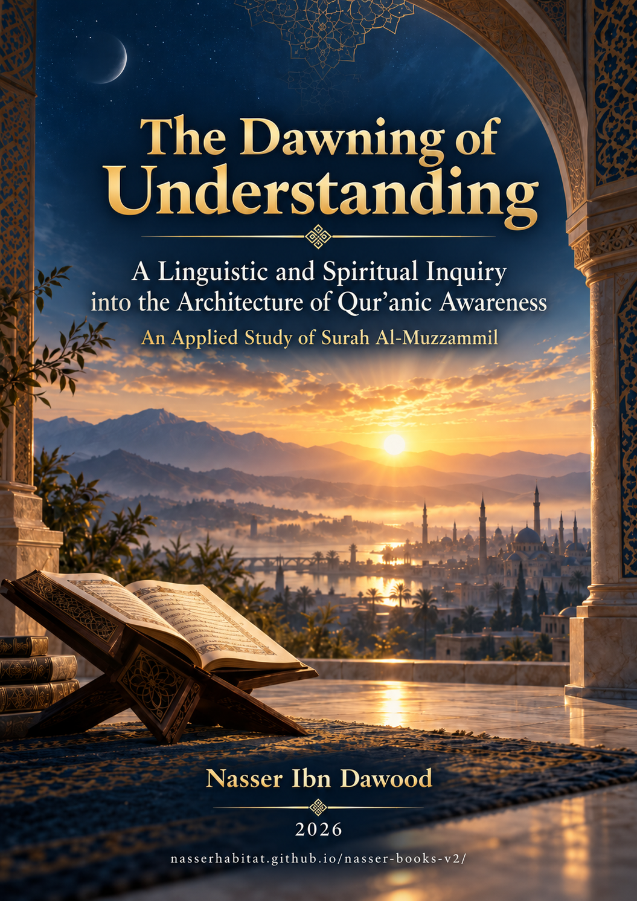

129. The Dawning of Understanding

A linguistic and spiritual inquiry into Qur’anic awareness through Surat al-Muzzammil, distinguishing evidence, interpretation, and models.
Condensed conceptual English adaptation; the Arabic text remains the primary source for detailed analysis and references.
قراءة PDF داخل الموقع / Read the PDF on this website
جارٍ تجهيز القارئ… / Preparing the reader…
Book Summary, Table of Contents & Excerpt
OPEN KNOWLEDGE SERIES / ARABIC–ENGLISH BRIDGE
THE DAWNING OF UNDERSTANDING
A Linguistic and Spiritual Inquiry into Qur'anic Awareness
A Conceptual Study of Surat al-Muzzammil
Nasser Ibn Dawood
A condensed English conceptual adaptation of the first Arabic edition (v1.0, 2026)
Original title: إسفار الصبح المعرفي — قراءة لسانية روحية في هندسة الوعي القرآني
I. The Global Knowledge Manifesto
Knowledge is a universal right. The author firmly believes that wisdom should not be locked behind paywalls or language barriers.
Global Access Policy: All books in this library are available for free in multiple digital formats (PDF, HTML, DOCX, TXT).
The Digital Library: As of early 2026, the collection hosts 236 volumes (118 in Arabic and 118 in English), fully optimized for AI-assisted research and digital archiving.
Official Platforms: Main Website: nasserhabitat.github.io/nasser-books/
GitHub: nasserhabitat/nasser-books
This manifesto is reproduced here as supplied by the author for this condensed edition.
II. Translator’s Note: The Bridge of Meaning
This English edition is a condensed conceptual adaptation. It is not a word-for-word translation, but rather an "extraction of essence." It presents the core philosophical framework in accessible English, omitting the exhaustive linguistic debates and classical references found in the original Arabic text.
For the academic researcher: The original Arabic version remains the primary source for comprehensive linguistic analysis, detailed exegesis (Tafsir), and the complete bibliography.
This adaptation also preserves the methodological status of the Arabic edition. A claim marked OPEN remains open; a CANDIDATE remains a candidate; a RESISTED or STRONGLY RESISTED claim is not revived through simplification; and a CLOSED result remains closed only within its declared scope. The aim is clarity without scientific inflation.
Key Qur’anic terms are sometimes retained in transliteration—such as nafs, tawaffī, barzakh, and baʿth—when a single English equivalent would prematurely narrow the field under study.
Editorial scope of this translation
The organizing source is Isfār al-Ṣubḥ al-Maʿrifī, Arabic first edition v1.0. Its five parts and fourteen chapters are preserved here in condensed form. References to the Qur'an use surah and verse numbers; short English renderings convey the sense under discussion and are not presented as an edition of the Arabic Qur'anic text. The original quotes, grammatical distinctions, source audit and extensive opposing tests remain in the Arabic volume. This adaptation is not a new independent ruling on disputed words.
Guide to this Edition
The text is primary. The first task is to determine what a verse actually says, in its lexical, grammatical and local context. This comes before any expanded psychological, educational or civilizational use.
A proposed analogy remains an analogy. The expression "research night," for example, may help describe the labor of inquiry. It does not prove that layl (night) lexically means ignorance or a phase of research. The surah's fractions of the night, and especially its final verse, remain evidence for actual time.
Claims are ranked, not blended. TEXT means direct Qur'anic wording. OBSERVATION marks something seen in the source. INDUCTION compares the relevant instances. HYPOTHESIS is a proposed meaning requiring testing. MODEL is an educational or conceptual analogy. OPEN means unsealed. CANDIDATE signals preliminary support. CLOSED applies only where a claim has met its specified tests within a stated scope.
Read the original when a disputed detail matters. The English chapters summarize the argument and its resistance, not every lexical citation or variant reported in the Arabic book.
Contents
Introduction — From Recitation to Responsibility
Part One — Method and the Ethics of Interpretation (Chapters 1–3)
Part Two — The Opening Call and the Night (Chapters 4–7)
Part Three — Heavy Speech, the Self and the Day (Chapters 8–10)
Part Four — Warning and the Limits of Metaphor (Chapters 11–12)
Part Five — Social Language and Merciful Adjustment (Chapters 13–14)
Conclusion — What Does a Cognitive Dawn Mean?
Appendix A — Comparative Notes on al-Muzzammil and al-Muddaththir
Appendix B — Divine Support, Illumination and Its Limits
Appendix C — Claim Register and Replication Protocol
Sources, Copyright and Further Reading
Introduction — From Recitation to Responsibility
Surat al-Muzzammil opens with a striking address to the one described as wrapped or enfolded, follows it with a command to rise during the night, specifies intervals, instructs the recipient to recite the Qur'an with tartīl, and announces a "weighty word" (73:1–5). Later it evokes the distinct qualities of nighttime and daytime, remembrance, devotion, trust, patience, warnings and judgment. Its unusually expansive twentieth verse revisits the quantities of nocturnal devotion, acknowledges the varied conditions of human life, and calls for what is feasible.